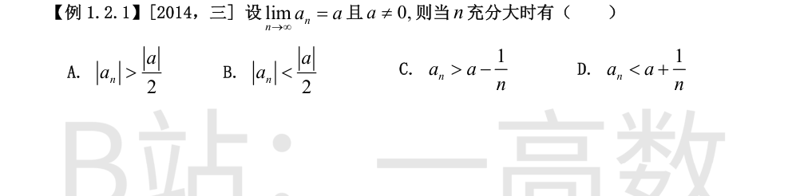
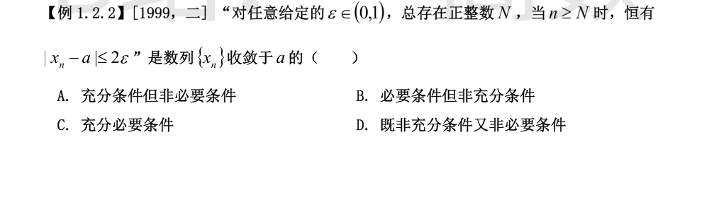
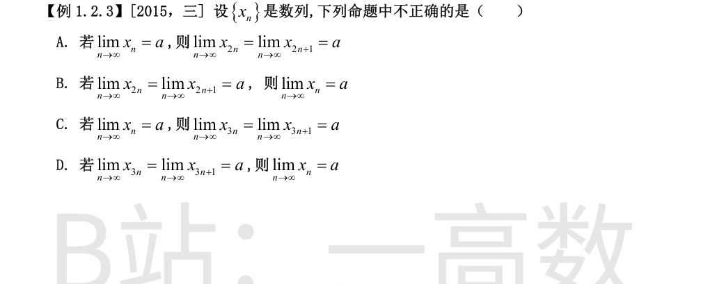
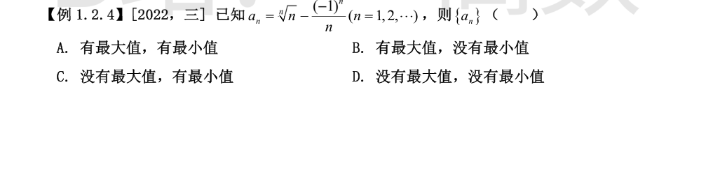

lim a_n = a ≠ 0，取 ε = |a|/2 > 0，存在 N 使 n>N 时 |a_n − a| < |a|/2，由极限保号性得 |a_n| > |a|/2，故选 A。

**充分性**：设该条件成立。任给 $\varepsilon'>0$，取
$$\varepsilon=\min\left\{\frac{\varepsilon'}{4},\frac12\right\}\in(0,1),$$
则存在正整数 $N$，当 $n\ge N$ 时
$$|x_n-a|\le 2\varepsilon\le\frac{\varepsilon'}{2}<\varepsilon',$$
由 $\varepsilon'>0$ 的任意性得 $x_n\to a$。故条件是充分的。
**必要性**：设 $x_n\to a$。对任意给定的 $\varepsilon\in(0,1)$，有 $\varepsilon>0$，从而 $2\varepsilon>0$，由极限定义存在正整数 $N$，当 $n\ge N$ 时 $|x_n-a|<2\varepsilon$，当然满足 $|x_n-a|\le 2\varepsilon$。故条件是必要的。
注意两点：① $\varepsilon$ 限制在 $(0,1)$ 内不失一般性（大范围可由小范围内的选取覆盖）；② 不等号为 $\le$ 且放大为 $2\varepsilon$ 均不改变极限关系。
故为充分必要条件，选 C。

A 正确：收敛数列的任何子列都收敛于同一极限，故 $x_{2n}\to a$，$x_{2n+1}\to a$。
B 正确：任给 $\varepsilon>0$，存在 $N_1,N_2$，使 $n>N_1$ 时 $|x_{2n}-a|<\varepsilon$，$n>N_2$ 时 $|x_{2n+1}-a|<\varepsilon$。取 $N=\max\{2N_1,\,2N_2+1\}$，当 $n>N$ 时，$n$ 为偶数则 $n=2k$ 且 $k>N_1$，$n$ 为奇数则 $n=2k+1$ 且 $k>N_2$，两种情况都有 $|x_n-a|<\varepsilon$，故 $x_n\to a$。
C 正确：同 A，子列 $\{x_{3n}\}$ 与 $\{x_{3n+1}\}$ 均收敛于 $a$。
D 不正确：子列 $x_{3n},x_{3n+1}$ 未覆盖下标形如 $3n+2$ 的项，它们可以任意。反例：
$$x_n=\begin{cases}0, & n\neq 3k+2,\\[2pt] 1, & n=3k+2,\end{cases}$$
则 $\lim x_{3n}=\lim x_{3n+1}=0$，但 $x_{3n+2}\to 1$，$\{x_n\}$ 不收敛（奇偶子列技巧只在子列并集覆盖全部正整数集时可用，如 2n 与 2n+1）。
故不正确的命题是 D，选 D。

记 $b_n=n^{1/n}$。因 $\dfrac{\ln x}{x}$ 在 $(0,e)$ 递增、$(e,+\infty)$ 递减，比较整数点：$b_1=1<b_2=\sqrt2<b_3=\sqrt[3]3\approx1.442$，且 $n\ge4$ 时 $b_n$ 递减趋于 $1$，故对一切 $n$ 有 $b_n\le\sqrt[3]3$，等号仅在 $n=3$。
按奇偶拆开：
$$a_n=n^{1/n}-\frac{(-1)^n}{n}=\begin{cases}b_n-\dfrac1n, & n\ \text{为偶数},\\[4pt] b_n+\dfrac1n, & n\ \text{为奇数}.\end{cases}$$
**最大值**：$a_1=1+1=2$。当奇数 $n\ge3$ 时 $a_n\le\sqrt[3]3+\dfrac13\approx1.776<2$；当 $n$ 为偶数时 $a_n=b_n-\dfrac1n\le\sqrt2-\dfrac12<2$。故最大值为 $a_1=2$，取得。
**最小值**：当偶数 $n\ge4$ 时，由 $e^x>1+x$ 得 $b_n=e^{\frac{\ln n}{n}}>1+\dfrac{\ln n}{n}$，于是
$$a_n=b_n-\frac1n>1+\frac{\ln n-1}{n}>1\quad(\ln n>1\ \text{当}\ n\ge4).$$
当 $n$ 为奇数时 $a_n=b_n+\dfrac1n>1$。而 $a_2=\sqrt2-\dfrac12\approx0.914<1$，故最小值为 $a_2=\sqrt2-\dfrac12$，取得。
具体数值验证：$a_1=2,\ a_2\approx0.914,\ a_3\approx1.776,\ a_4\approx1.164,\ a_5\approx1.580,\ a_6\approx1.181$，$a_n\to1$。
综上 $\{a_n\}$ 既有最大值又有最小值，选 A。